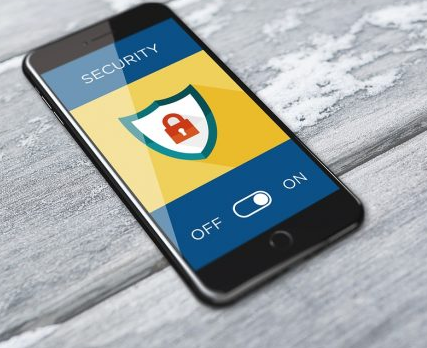

"PERGUNTAS FREQUENTES"
☑ O que é um ataque hacker?
Ataques hackers são tentativas de roubar, expor, alterar, desativar ou destruir informações por meio de acesso não autorizado a sistemas de computador ou nuvem de dados. Eles são geralmente realizados no intuito de obter informações sensíveis de empresas, pessoas físicas ou organização governamentais.
☑ Como saber se fui Hackeado?
No computador, caso perceba alterações em nomes da arquivos, lentidão, mudança em senhas de acesso, mudanças bruscas nas configurações sem que você tenha feito qualquer alteração e surgimento de barras adicionais no navegador da internet, fique atento! Esses são alguns dos sinais que seu dispositivo pode estar sendo alvo de um ataque de cibercriminosos. Em celulares, aumento do no gasto de dados, queda na velocidade de uso do aparelho, problemas em alguns aplicativos, superaquecimento, movimentação estranha em redes sociais e sites não autorizados e reinicialização do aparelho sem nenhum motivo podem ser indicações de um ataque hacker.
☑Como evitar um ataque hacker?
Seja com o uso de laptop ou smartphone, existem algumas maneiras de evitar hackers, como: evitar o acesso em Wi-Fi público; sempre utilizar senhas seguras; acessar sites criptografados e autenticados; utilizar autenticação de dois fatores para logins; atualizar regularmente o software dos aparelhos; fazer backups na nuvem; e ter um aplicativo de segurança confiável.
Vídeo com dicas de Segurança para smartphones
Se você acha que o seu telefone é uma área privada, talvez você esteja enganado. Até o momento, não existe aparelho que seja impossível de ser hackeado. Existem várias formas em que o seu telefone pode ser hackeado, como reconhecê-las, e como proteger o seu telefone de hackers. Assista o vídeo a seguir: "15 Sinais Claros de que o Seu Telefone foi Hackeado".
"CONCLUSÃO"
Tomadas todas as precauções que listamos nessa aula, evitamos com essas medidas, sermos vítimas de falta de segurança, pois podemos agora saber como a "Segurança na Internet" e todos os cuidados que devemos ter para proteger as coisas que fazem parte da internet como a infraestrutura, informações, dados sensíveis, dispositivos e equipamentos como os computadores, que são as mais atacadas pelos cibercriminosos.
BIBLIOGRAFIA (Referências)
BLOG INTNET. SEGURANÇA NAS REDES SOCIAIS: 8 COISAS QUE VOCÊ NÃO DEVE POSTAR! .Disponível em https://blog.intnet.com.br/seguranca-nas-redes-sociais-8-coisas-que-voce-nao-deve-postar/ . Acesso em Acesso em 09 fev.2022.
MICROSOFT. Ficar protegido com a Segurança do Windows. Disponível em https://support.microsoft.com/pt-br/windows/ficar-protegido-com-a-seguran%C3%A7a-do-windows-2ae0363d-0ada-c064-8b56-6a39afb6a963. Acesso em 09 fev.2022.
NEOWAY. Fraudes na internet: Quais os tipos de golpes e como evitar. Disponível em https://blog.neoway.com.br/fraudes-na-internet/?utm_source=linkedin&utm_medium=news&utm_campaign=ed5-2023&utm_id=news. Acesso em 08 fev.2022.
OLHAR DIGITAL. Os perigos da exposição desenfreada nas redes sociais. Disponível em https://olhardigital.com.br/2019/02/08/videos/os-perigos-da-exposicao-desenfreada-nas-redes-sociais/. Acesso em 09 fev.2022.
TECHTUDO. Sete coisas que você nunca deve postar na Internet. Disponível em https://www.techtudo.com.br/noticias/2019/01/sete-coisas-que-voce-nunca-deve-postar-na-internet.ghtml . Acesso em 09 fev.2022.
TILUOL. Segurança. Veja 20 dicas para evitar ser vítima de um hacker. Disponível em https://www.uol.com.br/tilt/noticias/redacao/2020/10/15/nao-caia-como-um-patinho-veja-20-dicas-para-evitar-ser-vitima-de-um-hacker.htm. Acesso em 09 fev.2022.
WIKIHOW. Como Evitar ser Hackeado. Disponível em https://pt.wikihow.com/Evitar-ser-Hackeado. Acesso em 09fev.2022.
Conheça o Colégio Minas Austral:
COLEGIO MINAS AUSTRAL OBJETIVO